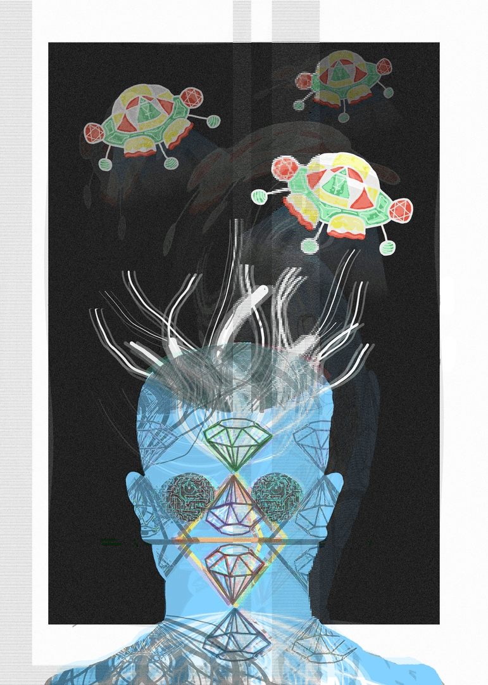

ПУТЬ НЕБЕСНОГО СТРАННИКА

Выход в открытый космос — работа или прогулка мана в космическом пространстве за пределами своего корабля.
Наполняет собою весь мир, не убавляясь
и не прибавляясь,
и не похоже, что когда-нибудь наступит
ему конец.
Действует подобно молоту кузнеца,
оттачивая суть вещей,
и потому в мире нет ничего постоянного.
Ты можешь наполнить весь дом золотом
и драгоценностями,
но не сможешь их уберечь.
Стремясь к богатству, чинам и почестям,
ты сам навлекаешь на себя беду.
Истинное достижение - это освободиться
от того, что обычно свойственно человеку.
Именно таков Путь Неба.